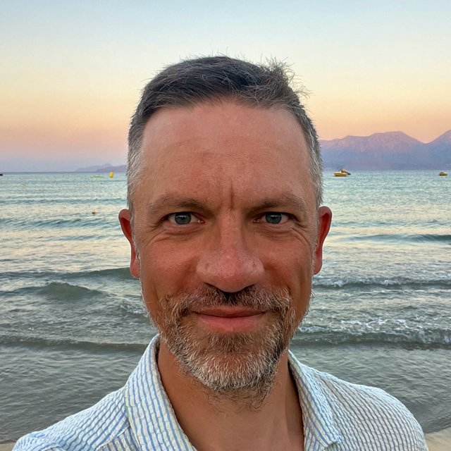
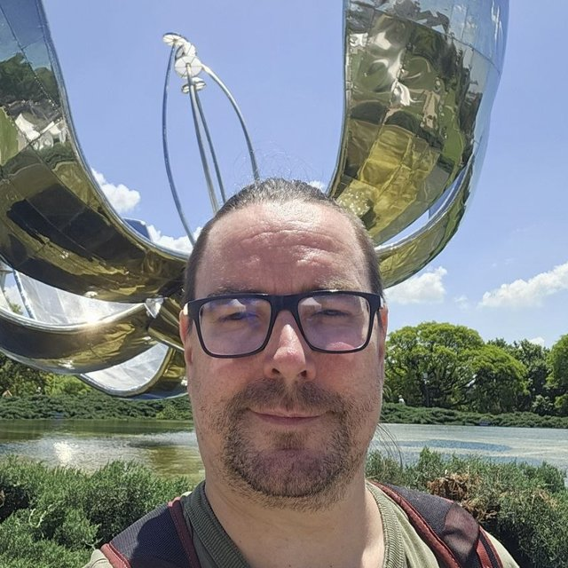
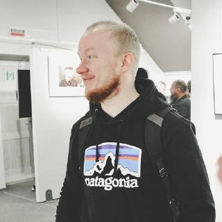

Organic Maps
The people behind Organic Maps
We are a small team of enthusiasts building a free, open-source maps app that works offline, shows no ads and does not track you.
Founders
-

Alexander Borsuk
Compiler & publisher
Co-founder
Co-founder of Organic Maps and creator of MAPS.ME.
-

Core team
-

Kiryl KaverynTopographer of the iOS sheet
iOS · @kirylkaveryn
The team's iOS expert, working across the whole iOS app.
-

Mikhail ListratsenkaTopographer of the Android & Wear OS sheets
Android & Wear OS · @strider-dunadan LinkedIn
Works across the whole Android app and the Wear OS watch app.
-
This could be youSheet not yet surveyed
Code, translations, map edits or helping other users — every contribution counts.
Built together with the community
Organic Maps would not exist without volunteers from all over the world: developers who send fixes, translators, testers, and OpenStreetMap mappers who keep the map up to date.